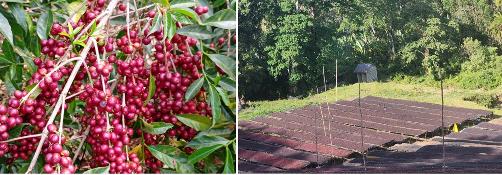
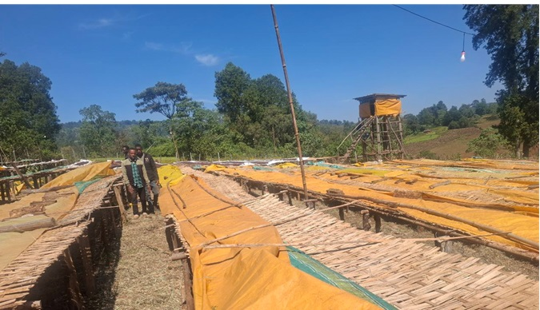
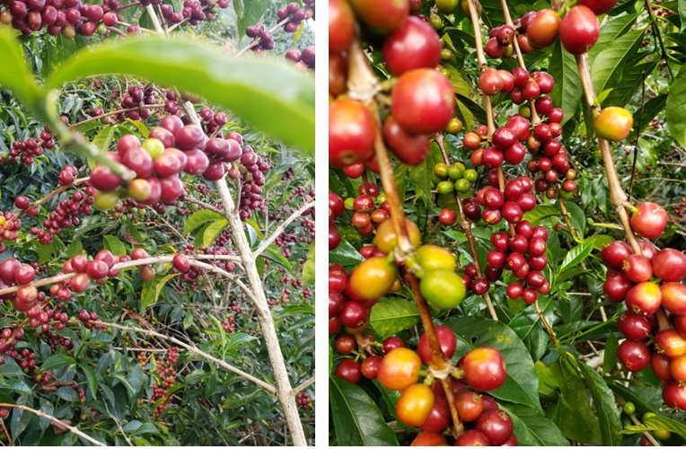

Rooted in Guji. Built on Experience. Driven by Quality.
Fero General Trading PLC is an Ethiopian coffee export company founded by experienced coffee farmers, processors, cooperative leaders, and certification professionals. With deep roots in the Guji Zone – particularly Uraga District – we are uniquely positioned to control quality from farm to export.
Our founders bring decades of combined expertise in coffee farming, dry processing, cooperative management, environmental auditing, and international certification systems. We are not only exporters — we are active participants in every stage of the coffee value chain.


To export exceptional Ethiopian coffee while fostering transparency, sustainability, and equitable value distribution across the coffee supply chain.

To become a globally recognized and trusted exporter of Ethiopian coffee, known for uncompromising quality, sustainable sourcing, and meaningful partnerships.